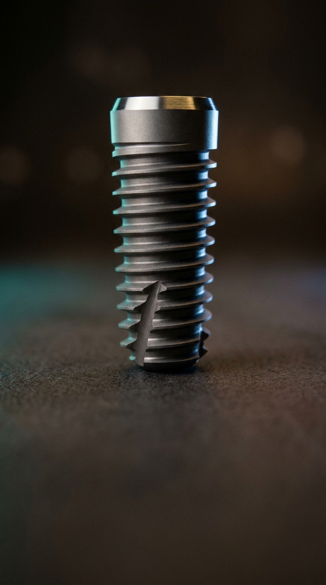
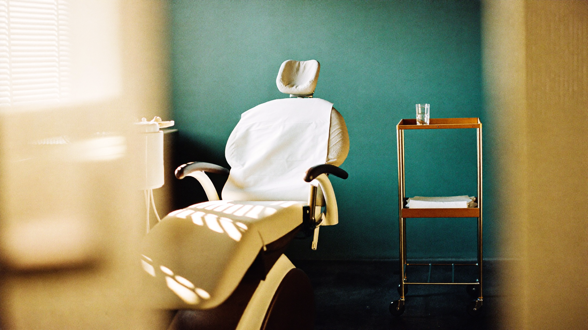

Вы больше не конкурируете ценой — пациент ищет именно вас, по имени.
Забронировать разбор →Маркетолог решит первую проблему — и молча создаёт вторую.
Люди выбирают конкретного врача, а не клинику «вообще». Когда вам доверяют ещё до первого визита — цена перестаёт быть главным аргументом.
И поверх всего — щит: юридическая безопасность рекламы.

SEO-отдел пишет и публикует новую сильную статью каждую неделю под вашим именем — на темы, которые ищут ваши будущие пациенты. Она поднимает вас в выдаче Яндекса и Google по запросам вашего города.
Пациенты всё чаще не гуглят, а спрашивают ChatGPT, Алису, Perplexity: «к какому имплантологу пойти», «сколько стоит имплант». Мы пишем статьи так, чтобы нейросети приводили в пример именно вас.
Реклама заканчивается вместе с деньгами. Статьи остаются в поиске и приводят пациентов месяцами — это актив, а не расход.
За вашим проектом закреплены аккаунт-менеджер и команда. Ведём запуск от первого созвона до первых записей и каждую неделю показываем, что сделано и какие цифры. Не «сдали сайт и пропали».
Личный бренд врача — это работа нескольких специалистов. Каждый отвечает за свой участок, а вы получаете результат как единую связку.
Ведёт ваш проект и держит связь каждую неделю.
Пишут и продвигают в поиске статьи под вашим именем.
Ведёт каналы в вашем голосе, готовит контент.
Собирает сайт и оформление на премиальном уровне.
Проверяет каждую публикацию до выхода.
Фиксируем вашу манеру речи — масштаб не убивает голос.
Мы проверяем каждый пост и статью на соответствие закону ещё до публикации. Это в основе нашей работы, а не проверка задним числом.
Обычный маркетолог принесёт трафик — а штраф за одно неверное слово получите вы. Мы отвечаем за каждое слово.
Каждая публикация врача выходит с дисклеймером по сути: «Имеются противопоказания, необходима консультация специалиста».
Наш рабочий фильтр — 7 проверок перед публикацией. Открыть гайд →Панель показывает: сколько заявок пришло из соцсетей и сайта, откуда и сколько дошло до записи. Первые цифры — к концу месяца ведения.
Сколько заявок и записей пришло из каждого канала — показываем в панели каждый месяц. Конкретные цифры называем после замера от вашей стартовой точки, а не авансом.
Сайт, голос-профиль, ссылка на ваш профиль-карту, первые статьи и посты.
Статьи в поиске, посты в соцсетях, отчёт по заявкам и записям.
Своя система записи и расширение каналов на доказанном результате.
Запуск и первый месяц ведения — внутри пакета.
Личный бренд уровня частной клиники.
Один платёж. Запуск за 2 недели + первый месяц ведения включён
В цену входит всё: премиальный сайт-портфолио · новая статья в поиске каждую неделю · две соцсети в вашем голосе · проверка каждого слова на соответствие закону · выделенная команда сопровождения. По договору фиксируем объём — 12–16 материалов в месяц: это статьи и посты вместе, а не сверх друг друга.
Что дальше — решаете вы. Механизм построен и остаётся вашим; если работа нравится, продолжаем ежемесячным сопровождением. Его стоимость обсуждаем на разборе — она зависит от того, что именно ведём.
По отдельности сайт, статьи, соцсети и юридическая проверка — это 200 000+ ₽ в месяц и пять подрядчиков. У нас — одна связка и одна цена.
Реклама и платные площадки — по желанию, отдельной строкой.
В первой группе — три врача, дальше лист ожидания. Первой группе фиксируем цену запуска и город: один имплантолог на город. Со второй группы условия пересматриваются.
Первый шаг — бесплатный разбор: покажем, по каким запросам вас сейчас ищут пациенты, где вы теряете записи и как будет выглядеть ваш личный бренд. Без обязательств.
Нажимая «Забронировать разбор», вы соглашаетесь с обработкой персональных данных. Мы не передаём их третьим лицам.
Два канала. Ваш голос.
Выбираете два канала (база — Telegram и Instagram, можно Max). Команда ведёт их в вашей манере: полезные посты, разборы, ответы. Пациент читает вас, начинает доверять и приходит на приём.